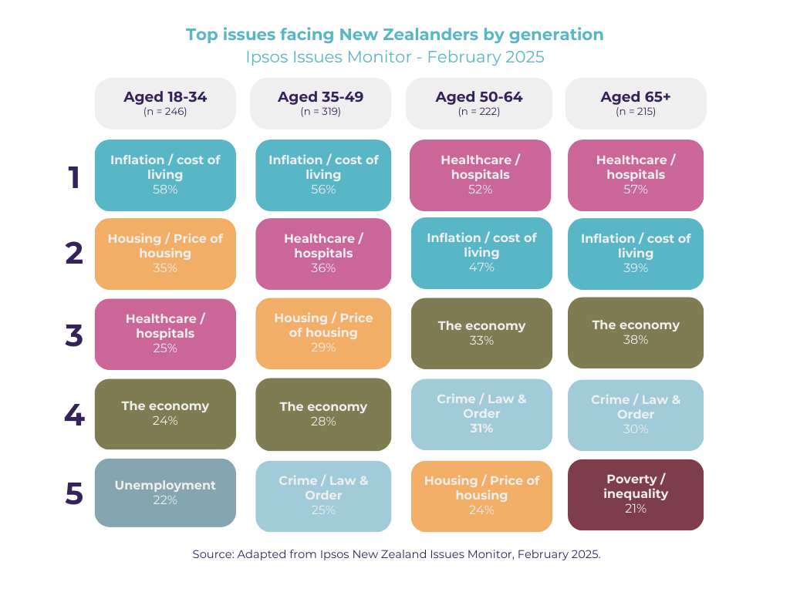

Week 1: Choosing a Direction — New Enterprise Project
The second trimester of my GDCT programme has just kicked off, and on Monday, we were introduced to our major assignment — New Enterprise. The goal is to identify a meaningful social issue and, through design, propose an innovative solution that creates real value for communities.
Finding My Focus
At the start of the week, I began thinking about what topics genuinely resonate with me — and where I could make a difference as a designer. Initially, I considered exploring mental health, particularly around stigma and emotional burnout. I began gathering research and data to help narrow down and define a more specific direction.
However, after speaking with my mentor and tutor Melody on Wednesday, we came to the conclusion that while mental health is an important area, it's often been explored by other designers. She encouraged me to consider a direction that would still be impactful — but less commonly approached — to give me the opportunity to bring a fresh perspective and stand out.
That conversation led me to the topic of housing affordability — a highly relevant and urgent issue for young people in Aotearoa New Zealand. It's particularly significant in Auckland, where, according to the Ipsos Issues Monitor, February 2025, housing remains one of the top concerns for my generation (see screenshot below).
Diving into the Problem
Once I settled on housing affordability, I began collecting data and insights to better understand the depth of the issue and where design could make a meaningful contribution. I focused on questions like:
- Why is it so difficult for young or single-income individuals to purchase a home?
- What barriers exist — financial, legal, informational?
- How aware are people of available support options, and how accessible are they?
- Could co-living or shared ownership be viable alternatives?
Through reading government reports, analysing statistics, and reviewing personal stories, I began identifying key sub-problems and sketching out some initial project ideas. This helped clarify the direction I want to take and allowed me to start thinking about who my target audience might be and what kind of support they really need.
This exploration was the core focus of my first sprint, and I feel like I've achieved that goal. The next challenge will be planning and conducting user interviews to hear directly from those affected by this issue. Finding the right people to speak with will take effort, but it's an important step forward.
This topic also feels deeply personal — my partner and I are currently thinking about buying our first home, and I know firsthand how confusing and overwhelming the process can be. A wrong decision can cost a lot, both financially and emotionally. Through this project, I want to help others navigate this journey with more clarity and confidence.
Sprint 1 Retrospective
What went well
- I narrowed down my focus to a topic that feels both relevant and personal.
- I gathered useful statistics and insights.
- I identified key sub-problems and started forming initial design ideas.
What didn't go so well
- The volume of information was overwhelming at times — it was difficult to filter what was truly relevant.
- I spent more time than expected comparing topics, which slightly delayed my timeline.
- I'm still unsure how to find the right people to interview.
What can be improved
- I need to structure my research more clearly — possibly with visual tools like Miro or Notion.
- I need to manage my time more efficiently and break tasks into smaller, achievable steps.
- I'm reminding myself to “work smarter, not harder” and stay on track.
Next Sprint: Goals
- Finalise and test interview questions
- Start recruiting participants for interviews
- Conduct initial interviews with potential users
- Begin mapping user needs and pain points
- Create a clear research timeline and begin tracking progress
In the next post, I'll share how my research interviews went, what I've learned so far, and how I'm shaping my solution based on real user insights.